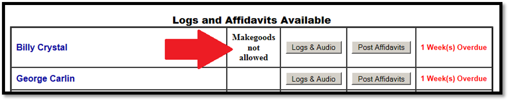

Main Menu
The Main Menu lists the affiliated vehicles with the logs and affidavits that are currently available.
Vehicle List and Buttons
The look of the Main Menu has changed with the new website. There is also a new field for the Missed Spots button (when makegoods are enabled and there are missed spots), and a new field to show the number of affidavit weeks that are overdue.
Web Version 1 Main Menu:
Web Version 2 Main Menu:
Note that the version number is shown in the upper right corner as V1 or V2.
On the version 2 Main Menu, the following appears for each vehicle:
Missed Spots: If the Makegood feature is enabled, if there are missed spots, a missed spots button will appear to the right of the vehicle name. This button shows both the number of missed spots for the vehicle, and is a button that can be used to create makegoods.
Makegoods Not Allowed: If makegoods are disallowed for this vehicle (but enabled in Affiliate Site Options), then the words “Makegoods not allowed” will be shown in this field instead. (If makegoods are disabled in Site Options, the words “makegoods not allowed” will not be shown.)

Logs & Audio: Pressing the “Logs & Audio” button will navigate the system to the page where logs can be viewed and printed.
Post Affidavits: Pressing the “Post Affidavits” button will navigate the system to the pages used for posting aired affidavits.
Weeks Overdue: If there are overdue affidavits, the total number of affidavit weeks that are overdue will be shown in red to the right of the “Post Affidavits” button. (When there are no overdue affidavit weeks, this field will be blank.) An affidavit is only considered overdue if the number of weeks specified in Affiliate Site Options -> Messages -> Overdue -> “Number of weeks behind considered overdue” has passed.
Creating Makegoods
When makegoods are enabled in Affiliate Site Options, makegoods can be created from the “Missed Spots” button on the Main Menu, or by pressing the “Assign Makegoods” button on the Posting Screen.
Station users will follow these steps to create a makegood:
- Press the “Missed Spots” button on the Main Menu or the “Assign Makegoods” button on the Posting Screen to bring up the list of missed spots.
- On the left side of the screen, under the red “Missed” header, the following information is shown for each missed spot:
- Advt/Prod: the advertiser and product name of the missed spot.
- Len: the length in seconds of the missed spot.
- Valid Days: the days of the week that are valid for the spot to air.
- Missed Date: the date that the spot was originally scheduled to air.
- Missed Time: the time that the spot was originally scheduled to air.
- On the right side of the page, under the green “Made Good” header, the air date, air time, and ISCI can be entered for the makegood.
- Type the air date and air time of the makegood in the corresponding field. (A list of valid date and time formats can be seen by pressing the yellow question mark in the upper left corner of the Main Menu page.)
- After entering the makegood air date and time, the ISCI will typically be automatically selected. The Copy End Date is also shown (using the latest rotation end date from the copy inventory).
- Press the “Process” button to create the makegood spot.
- Press the “Close” button to close the Missed Spots page and to return to the Main Menu or Posting Screen.
The Makegood Policy rules can be seen from this screen by pressing the Makegood Policy button.
If a user attempts to enter a makegood that violates one of the rules, a warning message will appear with information about what needs to be done to correct the issue.
Note: if a makegood is created with a makegood air date in the past, then the posting flag will get automatically set on the makegood.
Bypassed Makegoods
When the Site Options setting “Allow Station the option to bypass Makegood scheduling when permission granted” is set to Yes, station website users will have the ability to mark a missed spot as a “bypassed makegood”, which is a missed spot that will never be made good. The bypassed makegood spot will be flagged with status 15 when viewed on Affiliate System spot reports such as the Fed vs. Aired and Pledged vs. Aired reports, or on screens that show affiliate spots such as the Affiliate Affidavits screen.
If Bypassed Makegoods are enabled, the missed spot list shown on the website will include an additional yellow column as shown in the picture below. (This additional field will not be shown if bypassed makegoods are not enabled.)
To mark a missed spot as a “bypassed makegood”, station users can click in the box in the yellow column for the missed spot that they want to mark as a “bypassed makegood”. This will place an “X” in the box, and gray out the makegood air date, air time, and ISCI field as shown below.
After pressing the Process button, the bypassed makegood will be automatically marked as posted, and it can be seen on the Posted Spots view, indicated with a letter “X” in the “MG” column, as shown in the picture below.
If a missed spot was flagged as a bypassed makegood spot by mistake, the bypassed makegood can be undone by clicking the “X” on the Posted Spots view, and answering Yes to the prompt that appears and that asks whether to undo the bypassed makegood spot. Undoing the bypassed makegood will return the spot to the list of missed spots where it can either be made good normally or bypassed again if necessary.
Bypassed makegoods that have been imported back to the Affiliate system will appear with status 15, as shown in the example below on the Affiliate Affidavits screen.